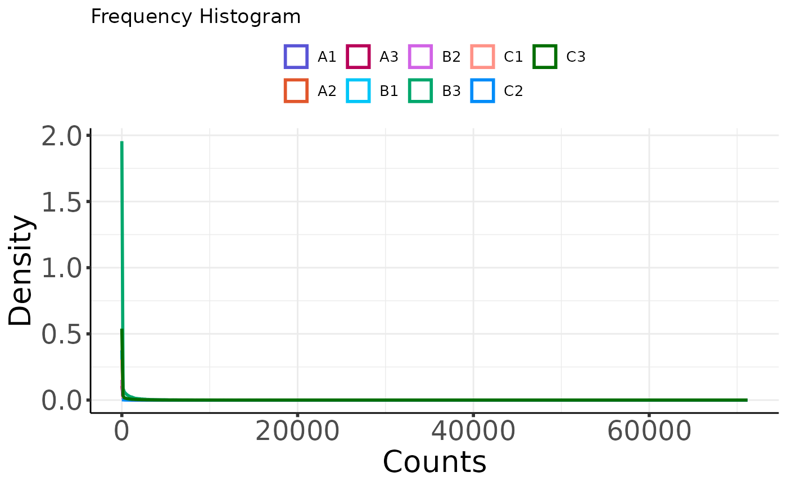

Plot histogram for counts dataframe
Arguments
- moo_counts
counts dataframe (required)
- sample_metadata
sample metadata as a data frame or tibble (required)
- sample_id_colname
The column from the sample metadata containing the sample names. The names in this column must exactly match the names used as the sample column names of your input Counts Matrix. (Default:
NULL- first column in the sample metadata will be used.)- feature_id_colname
The column from the counts dataa containing the Feature IDs (Usually Gene or Protein ID). This is usually the first column of your input Counts Matrix. Only columns of Text type from your input Counts Matrix will be available to select for this parameter. (Default:
NULL- first column in the counts matrix will be used.)- group_colname
The column from the sample metadata containing the sample group information. This is usually a column showing to which experimental treatments each sample belongs (e.g. WildType, Knockout, Tumor, Normal, Before, After, etc.).
- label_colname
The column from the sample metadata containing the sample labels as you wish them to appear in the plots produced by this template. This can be the same Sample Names Column. However, you may desire different labels to display on your figure (e.g. shorter labels are sometimes preferred on plots). In that case, select the column with your preferred Labels here. The selected column should contain unique names for each sample. (Default:
NULL–sample_id_colnamewill be used.)- color_values
vector of colors as hex values or names recognized by R
- color_by_group
Set to FALSE to label histogram by Sample Names, or set to TRUE to label histogram by the column you select in the "Group Column Used to Color Histogram" parameter (below). Default is FALSE.
- set_min_max_for_x_axis
whether to override the default for
ggplot2::xlim()(default:FALSE)- minimum_for_x_axis
value to override default
minforggplot2::xlim()- maximum_for_x_axis
value to override default
maxforggplot2::xlim()- x_axis_label
text label for the x axis
ggplot2::xlab()- y_axis_label
text label for the y axis
ggplot2::ylab()- legend_position
passed to in
legend.positionggplot2::theme()- legend_font_size
passed to
ggplot2::element_text()viaggplot2::theme()- number_of_legend_columns
passed to
ncolinggplot2::guide_legend()- interactive_plots
set to TRUE to make the plot interactive with
plotly, allowing you to hover your mouse over a point or line to view sample information. The similarity heat map will not display if this toggle is set to TRUE. Default is FALSE.
See also
plot_histogram generic
Other plotters for counts dataframes:
plot_corr_heatmap_dat,
plot_expr_heatmap_dat,
plot_pca_dat,
plot_read_depth_dat
Examples
# plot histogram for a counts dataframe directly
plot_histogram(
nidap_clean_raw_counts,
sample_metadata = nidap_sample_metadata,
sample_id_colname = "Sample",
feature_id_colname = "Gene",
label_colname = "Label"
)

# customize the plot
plot_histogram(
nidap_clean_raw_counts,
sample_metadata = nidap_sample_metadata,
sample_id_colname = "Sample",
feature_id_colname = "Gene",
group_colname = "Group",
color_by_group = TRUE
)